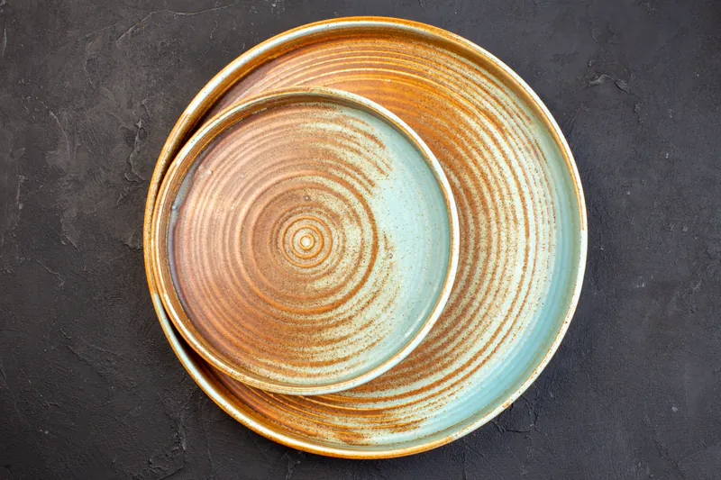

Az első lépés egy üzenet
Beszéljük meg, mit alkotnál szívesen!
Kérdésed van a tanfolyamokról, közös programot szerveznél, vagy a kerámiák érdekelnek? Írj bátran! Segítek eligazodni a lehetőségek között, és egyeztetjük a részleteket.

Melyik program érdekel?
Kipróbálnád a korongozást, közös alkotást szerveznél, vagy ajándékötletet keresel? Válassz programot, és írd meg, miben segíthetek! A kerámiákról is bátran kérdezhetsz.
Az érdeklődés elküldése még nem jelent helyfoglalást. A részleteket és a szabad időpontokat veled egyeztetjük.
Jó tudni, mielőtt írsz
Talán benned is felmerült.
Nem tudom, melyik programot válasszam. Így is írhatok?
Persze! Írd meg, hogy egyszer próbálnád ki a korongozást, hosszabban tanulnál, vagy közös élményt keresel. Segítek megtalálni a hozzád illő programot.
Előzetes egyeztetés nélkül is részt vehetek foglalkozáson?
A foglalkozásokhoz előzetes egyeztetés szükséges, hogy biztosan legyen szabad helyed és előkészíthessem az eszközöket.
Ajándékba is adhatok alkotóélményt?
Igen, ajándékozással kapcsolatban is kereshetsz. Válaszd az űrlapon az „Ajándékozás vagy egyéb érdeklődés” lehetőséget, és írd meg az elképzelésedet!
A bemutatott kerámiákról is érdeklődhetek?
Igen! Válaszd az „Ajándékozás vagy egyéb érdeklődés” lehetőséget, és írd meg, melyik tárgy keltette fel a figyelmedet. Online vásárlásra nincs lehetőség.